Tema 1 Probabilidad
1.1 Probabilidades Básicas
Ejemplo
Tirar un dado de 6 caras y anotar el número de puntos de la cara superior.
Ejemplo
Los sucesos elementales del ejemplo anterior serían:


1.1.1 Definiciones básicas
Ejemplo
El espacio muestral del ejemplo anterior del dado es\(\Omega=\Big\{\),
,
,
,
,
\(\Big\}\)
pero por comodidad, a partir de ahora pondremos \[\Omega = \{1,2,3,4,5,6\}\]
1.1.2 Definiciones básicas
Alguno sucesos notables que merece la pena nombrar son:
Suceso seguro o cierto : \(\Omega\)Suceso imposible o vacio : \(\emptyset\)Partes de un conjunto : \(\mathcal{P}(\Omega)\): conjunto de todos los sucesos del experimento aleatorio (es decir, el conjunto de todos los subconjuntos de \(\Omega\))
Ejercicio
¿Cuantos elementos contiene el conjunto de partes de \(\Omega\) del experimento anterior?
1.1.3 Ejemplo \(n\)-grama
Se define un \(n\)-grama de una palabra como el conjunto de \(n\) letras consecutivas de la misma (contando los blancos de inicio y final de palabra que marcamos como “_”).
Ejemplo
Consideremos el experimento aleatorio que consiste en escoger al azar un 3-grama de la palabra “_Baleares_”. Vamos a escribir el espacio muestral y algunos sucesos elementales del mismo.
En este caso, si consideramos la palabra “_Baleares_”, el espacio muestral del experimento sería:
\[\Omega=\{\_Ba, Bal, ale, lea, ear, are, res, es\_\}\]
Algunos sucesos serían:
- 3-gramas que empiezan por \(a\): \(\{ale,are\}\)
- 3-gramas de inicio y final de palabra: \(\{\_Ba,es\_\}\)
- 3-gramas que contengan una \(l\): \(\{Bal,ale,lea\}\)
1.1.4 Operaciones con sucesos
Si tenemos dos sucesos \(A,B\subseteq \Omega\), podemos definir:
- \(\Omega\): suceso total o seguro
- \(\emptyset\):suceso vacío o imposible
- \(A\cup B\): suceso unión; el que ocurre si sucede \(A\) o \(B\)
- \(A\cap B\): suceso intersección; el que ocurre si sucede \(A\) y \(B\)
- \(A^c\): suceso complementario el que sucede si NO sucede \(A\).
- \(A- B=A\cap B^c\): suceso diferencia, que acontece si sucede \(A\) y NO sucede \(B\).
1.1.5 Ejemplo género
Ejemplo
Supongamos que el sexo se divide entre Mujeres y Hombres. Vamos a definir el espacio muestral, los sucesos elementales y a realizar algunas operaciones entre ellos.
- Estudiantes de esta clase: \(\Omega\)
- Mujeres de esta clase: \(A\)
- Estudiantes que son zurdos \(B\)
Algunas operaciones entre los conjuntos:
- \(A\cup B\): Est. que son mujeres o que son zurdos.
- \(A\cap B\): Mujeres de esta clase que son zurdas.
- \(A^c\): Hombres de esta clase.
- \(A-B\): Mujeres de la clases que NO son zurdas.
- \(B-A\): Hombres de la clase que son zurdos
- ¡Cuidado! No son incompatibles
1.1.6 Propiedades
\[A\cup B=B\cup A, \quad A\cap B=B\cap A\]
\[A\cup(B\cup C)=(A\cup B)\cup C, \quad A\cap(B\cap C)=(A\cap B)\cap C\]
\[A\cap(B\cup C)=(A\cap B)\cup (A\cap C), \quad A\cup(B\cap C)=(A\cup B)\cap (A\cup C)\]
1.1.7 Propiedades
| \(A\) | \(B\cap C\) | \(A\cup (B\cap C)\) |
|---|---|---|
| 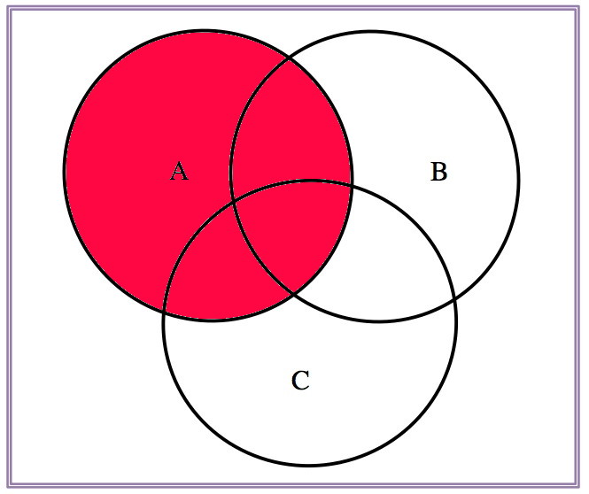 | 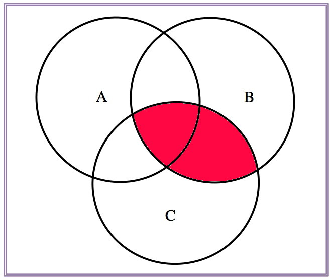 | 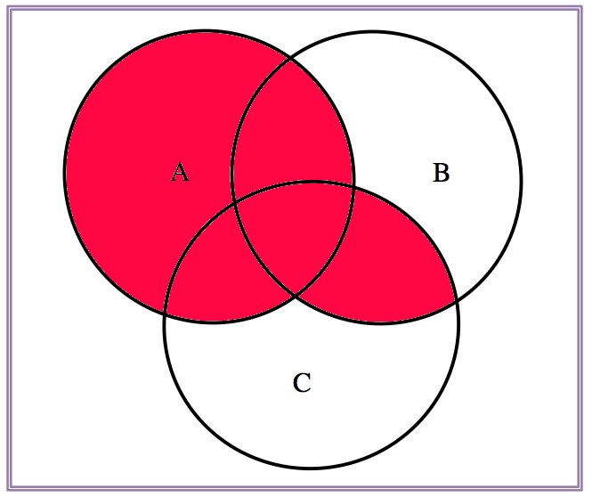 |
1.1.8 Propiedades
| \(A\cup B\) | \(A\cup C\) | \((A\cup B)\cap (A\cup C)\) |
|---|---|---|
| 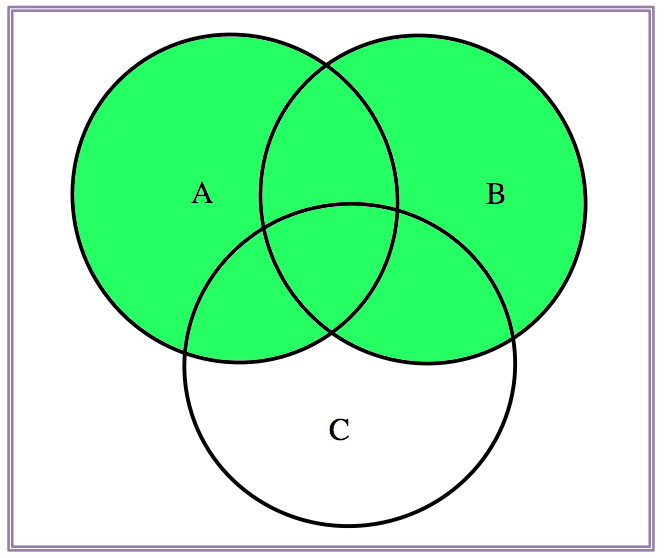 | 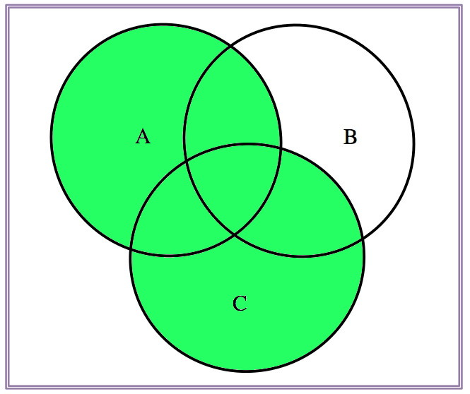 |  |
1.1.9 Propiedades
| \(A\) | \(A^c\) | \((A^c)^c\) |
|---|---|---|
 |
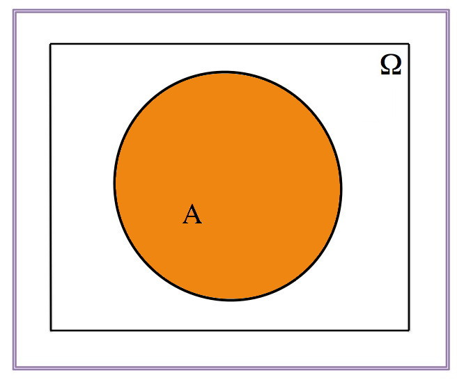 |
1.1.10 Propiedades
\[(A\cup B)^c=A^c\cap B^c\]
| \(A\cup B\) | \((A\cup B)^c\) |
|---|---|
| 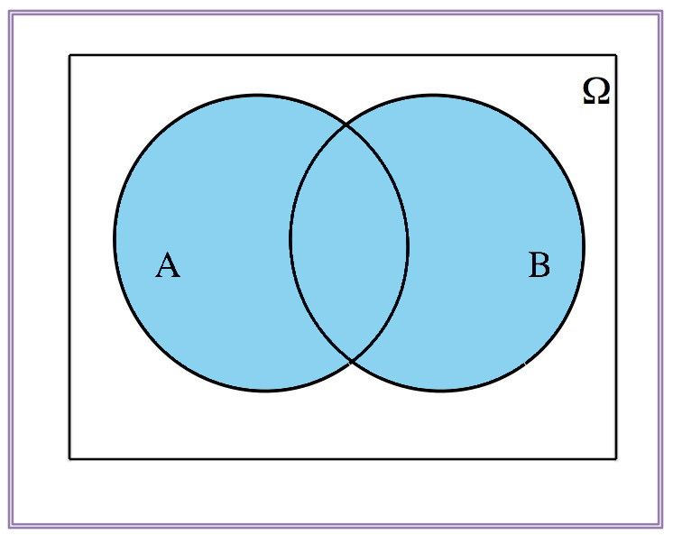 | 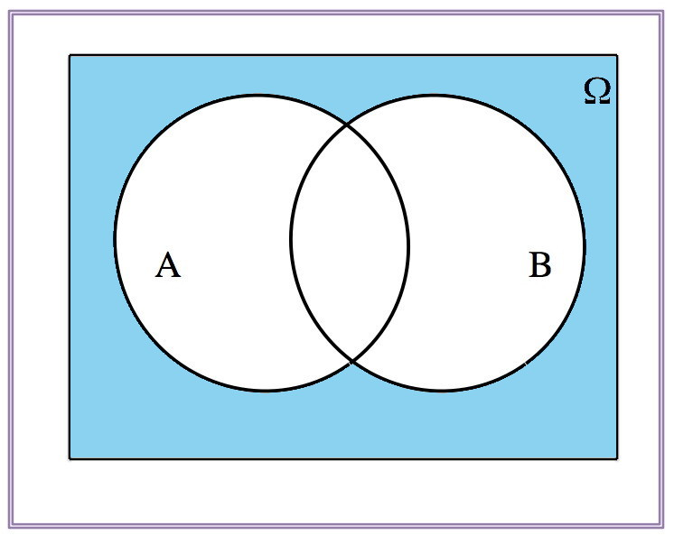 |
1.1.11 Propiedades
\[(A\cup B)^c=A^c\cap B^c\]
| \(A^c\) | \(B^c\) | \(A^c\cap B^c\) |
|---|---|---|
 |
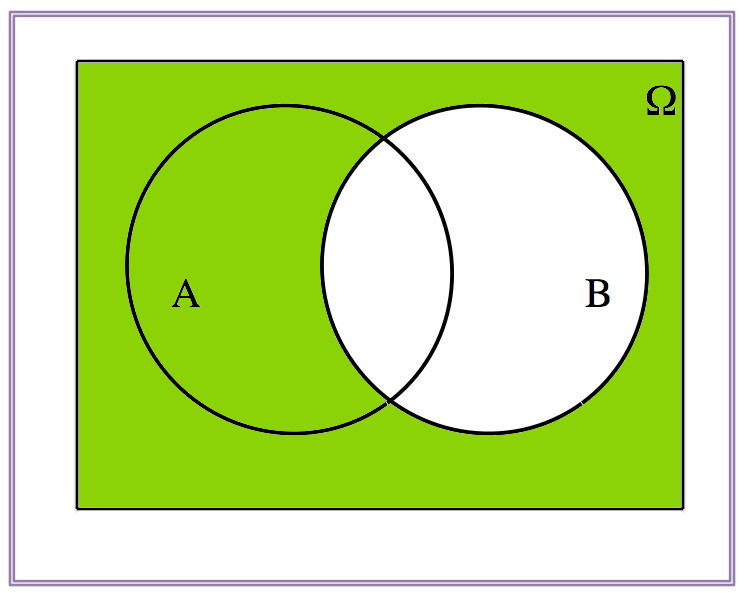 | 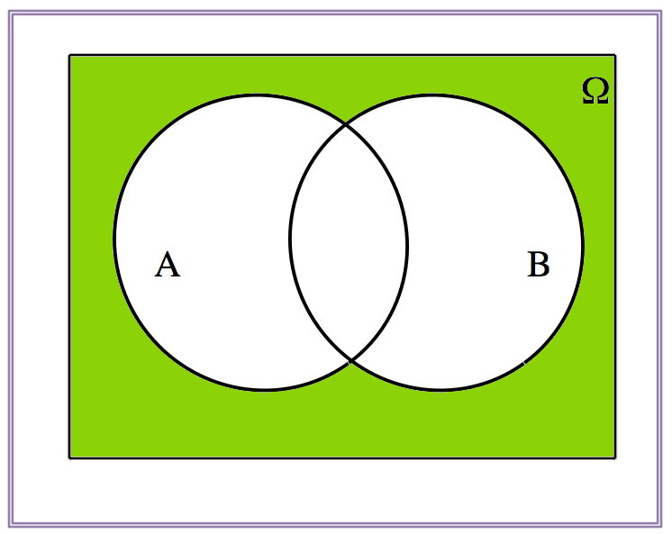 |
1.1.12 Propiedades
\[(A\cap B)^c=A^c\cup B^c\]
| \(A\cap B\) | \((A\cap B)^c\) |
|---|---|
| 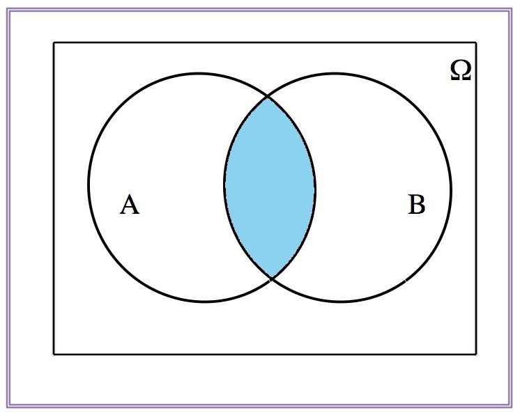 | 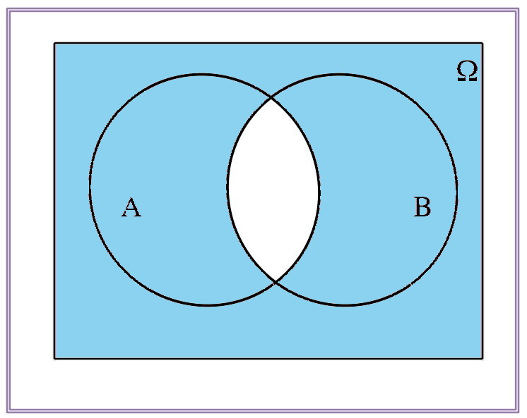 |
1.1.13 Propiedades
\[(A\cap B)^c=A^c\cup B^c\]
| \(A^c\) | \(B^c\) | \(A^c\cup B^c\) |
|---|---|---|
| 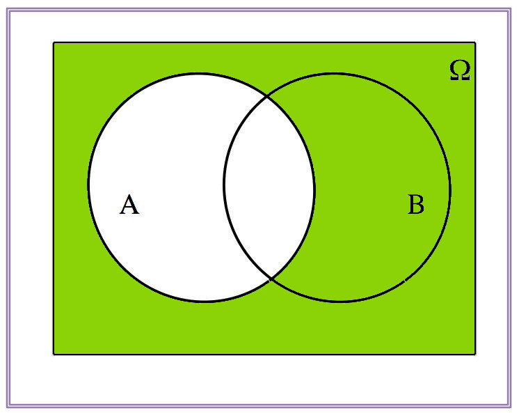 | 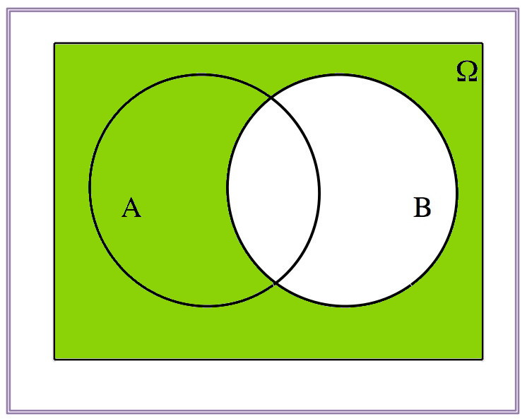 | 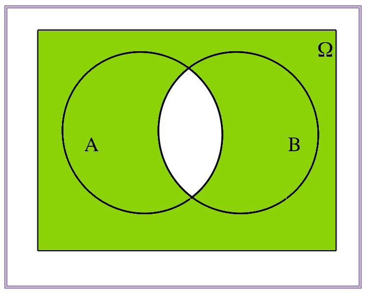 |
1.1.14 Definición de probabilidad
La probabilidad de un suceso es una puntuación (score) numérico entre 0 y 1 que mide la verosimilitud de que este evento se produzca.
Esta verosimilitud puede estar justificada por
Estimación personal
Estimación de expertos
La frecuencia con la que se da
Cálculo formal
1.1.15 Definición de probabilidad
Sea \(\Omega\) el espacio muestral de un experimento aleatorio. Supongamos que el número de posibles resultados, por el momento, es finito.
Una probabilidad sobre \(\Omega\) es una aplicación \(P:\mathcal{P}(\Omega)\to [0,1]\) con las siguientes propiedades:
- \(0\leq P(A)\leq 1\), para todo suceso \(A\)
- \(P(\Omega)=1\)
- Si \(\{A_1,A_2,\ldots,A_n\}\) son sucesos disjuntos dos a dos, entonces
\[ P(A_1\cup A_2\cup \cdots \cup A_n)=P(A_1)+P(A_2)+\cdots +P(A_n) \]
Si \(a\in \Omega\) es un suceso elemental cometeremos el abuso de notación de poner \(P(a)\) en lugar de \(P(\{a\})\)
1.1.16 Ejemplo: grupos sangíneos
Ejemplo
En la página de la Fundación Banco de Sangre y Tejidos de las Islas Baleares podemos encontrar información sobre los porcentajes de tipos de sangre de los donantes de las Islas Baleares:
\[A: 46\%; B: 7.5\%; AB: 3.5\%; O: 43\%\]
¿Cuál es la probabilidad de que un balear donante de sangre no sea del tipo 0?
Experimento aleatorio: tipo de sangre de un paciente humano
\[\Omega=\{\mbox{A,B,AB,O}\}\]
Probabilidad de un suceso: se asimila al porcentaje observado de individuos
Suceso: \(\{\mbox{O}\}^c=\{\mbox{A,B,AB}\}\)
\[P(\{\mbox{O}\}^c)\!=\!P(\{\mbox{A,B,AB}\})\!=\! P(\mbox{A})+P (\mbox{B})+P(\mbox{AB})\!=\!0.57\]
1.1.17 Propiedades
\(P(\emptyset)=0\)
\(P(A-B)=P(A)-P(A\cap B)\) porque \(P(A)=P(A-B)+P(A\cap B)\)

Si \(B\subseteq A\), entonces \(0\leq P(B)\leq P(A)\)
\(P(A^c)=1-P(A)\)
1.1.18 Propiedades
- \(P(A\cup B)=P(A)+P(B)-P(A\cap B)\) porque
\[\begin{eqnarray*} P(A)+P(B)-P(A\cap B) &=& P(A-B)+P(A\cap B)+\\ & & P(B-A)+ P(A\cap B)-P(A\cap B)\\ &=& P(A-B)+P(A\cap B)+ P(B-A) \\ &=& P(A\cup B) \end{eqnarray*}\]
1.1.19 Propiedades
- \[\begin{eqnarray*} P(A\cup B\cup C)&=&P(A)+P(B)+P(C) \\ &&-P(A\cap B)-P(A\cap C)-P(B\cap C) +P(A\cap B\cap C) \end{eqnarray*}\]
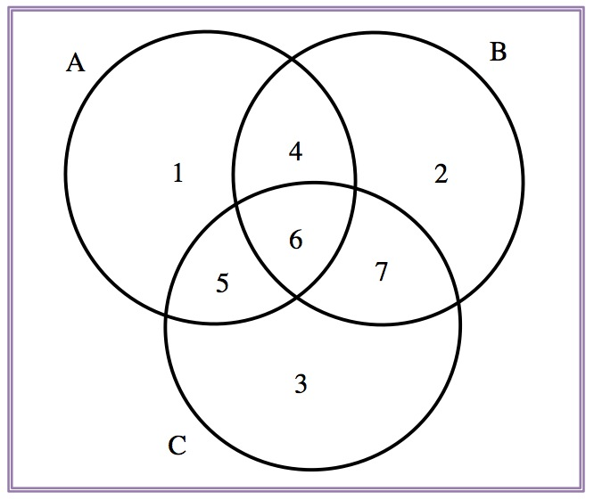
\[P(A\cup B\cup C)=P(1)+P(2)+P(3)+P(4)+P(5)+P(6)+P(7)\]
1.1.20 Propiedades
Si \(A=\{a_1,a_2,\ldots,a_k\}\), entonces \[ P(A)=P(a_1)+P(a_2)+\cdots+P(a_k) \]
Si todos los sucesos elementales tienen la misma probabilidad, \[ P(A)=\frac{|A|}{|\Omega|}\Big(=\frac{\mbox{casos favorables}}{\mbox{casos posibles}}\Big) \]
1.1.21 Ejemplo: Frecuencia de vocales
Ejemplo
Los porcentajes de vocales de un determinado idioma (de alfabeto latino) según la Wikipedia son:
\[A: 18.7\%; E: 26.1\%; I: 25.7\%; O: 24.4\% U: 5.1\%\]
¿Cuál es la probabilidad que una vocal escogida al azar de este idioma sea una E o una O?
El espacio muestral del experimento es \(\Omega=\{A,E,I,O,U\}\).
El suceso que deseamos analizar es \(\{E,0\}\).
Y su probabilidad es
\[P(\{E,O\})=P(E)+P(O)=0.261+0.244=0.505.\]
1.1.22 Ejemplo: Consumo de drogas
Segun un árticulo de El País, en un control especial de la policía el \(0.1\%\) de todos los conductores analizados en un control de tráfico dan positivo en un el test en cocaína, y el \(1\%\) da positivo en cannabis. Un \(1.05\%\) da positivo en alguno de los dos test.
¿Cuál es la probabilidad que un individuo analizado en el control de drogas escogido al azar no de positivo en ninguno de lo dos test?
Los sucesos elementales del enunciado del problema son:
- \(A\): dar positivo en cocaína; \(P(A)=0.001\)
- \(B\): dar positivo en cannabis; \(P(B)=0.01\)
En este caso nos interesa estudiar los sucesos:
- \(A\cup B\): dar positivo en alguno de los dos test; \(P(A\cup B)=0.0105\)
- \((A\cup B)^c\): no dar positivo en ninguno de los test
de donde, por tanto: \[P((A\cup B)^c)=1-P(A\cup B)=1-0.0105=0.9895.\]
1.1.23 Ejemplos: Consumo de drogas
Ejemplo
En un control especial de la policía el \(0.1\%\) de todos los conductores analizados en un control de tráfico dan positivo en un el test en cocaína, y el \(1\%\) da positivo en cannabis. Un \(1.05\%\) da positivo en alguno de los dos test.
¿Cuál es la probabilidad que un analizado al azar de positivo en los dos test en cocaína y cannabis?
Los sucesos elementales son:
- \(A\): dar positivo en cocaína; \(P(A)=0.001\)
- \(B\): dar positivo en cannabis; \(P(B)=0.01\)
En este caso nos interesa estudiar los sucesos:
- \(A\cup B\): dar positivo en algún de los dos test; \(P(A\cup B)=0.0105\)
- \(A\cap B\): dar positivo en los dos test
de donde, por tanto:
\[\begin{array}{rl} {P(A\cap B)} &{=P(A)+P(B)-P(A\cup B)}\\ &{=0.001+0.01-0.0105=0.0005} \end{array}\]
1.1.24 Ejemplo: Control de drogas
Ejemplo
En un control especial de la policía el \(0.1\%\) de todos los conductores analizados en un control de tráfico dan positivo en un el test en cocaína, y el \(1\%\) da positivo en cannabis. Un \(1.05\%\) da positivo en alguno de los dos test.
¿Cuál es la probabilidad de que un conductor analizado de positivo en cocaína pero no en cannabis?
Los sucesos elementales son:
- \(A\): dar positivo en cocaína; \(P(A)=0.001\)
- \(B\): dar positivo en cannabis; \(P(B)=0.01\)
En este caso nos interesa estudiar los sucesos:
- \(A\cap B\): dar positivo en los dos test; \(P(A\cap B)=0.0005\)
- \(B-A\): dar positivo en cocaína pero no en cannabis
de donde, por tanto:
\[P(B-A) =P(B)-P(A\cap B) =0.01-0.0005=0.0095\]
1.2 Probabilidad condicionada
1.2.1 Probabilidad condicionada
- de que suceda \(B\) suponiendo que pasa \(A\)
- de que si pasa \(A\), entonces suceda \(B\)
- de que un resultado de \(A\) también pertenezca a \(B\)
Se calcula a través de la definición:
\[ P(B|A)=\frac{P(A\cap B)}{P(A)} \]
1.2.2 Ejemplo: frecuencia género y gafas
Ejemplo
En una clase de 20 hombres y 30 mujeres, 15 hombres y 18 mujeres llevan gafas. Contestemos las siguientes preguntas:
- ¿Cuál es la probabilidad de que un alumno lleve gafas?
\[ \frac{33}{50} \]
- ¿Cuál es la probabilidad de que un alumno sea mujer y lleve gafas?
\[ \frac{18}{50} \]
1.2.3 Ejemplo: sexo y gafas
Ejemplo
En una clase de 20 hombres y 30 mujeres, 15 hombres y 18 mujeres llevan gafas. Contestemos las siguientes preguntas:
- ¿Cuál es la probabilidad de que un chica lleve gafas?
\[ \frac{18}{30}=\frac{18/50}{30/50}=\frac{P(\mbox{mujer y gafas})}{P(\mbox{mujer})} \]
- Si escogemos un estudiante al azar ¿Cuál es la probabilidad que si es mujer, entonces lleve gafas?
\[ \frac{18}{30} \]
1.2.4 Ejemplo
Ejemplo
En una clase de 20 hombres y 30 mujeres, 15 hombres y 18 mujeres llevan gafas. Contestemos las siguientes preguntas:
- ¿Cuál es la probabilidad de que un alumno que lleve gafas sea mujer?
\[ \frac{18}{33}=\frac{18/50}{33/50}=\frac{P(\mbox{mujer y gafas})}{P(\mbox{gafas})} \]
- Si escogemos un estudiante al azar ¿Cuál es la probabilidad de que si lleva gafas, entonces sea mujer? \[ \frac{18}{33} \]
1.2.5 ¡Atención!
Hay que distinguir bien entre
- \(P(A\cap B)\): probabilidad de \(A\) \(\color{red}{\text{y}}\) \(B\)
Probabilidad de que sea mujer y lleve gafas
- \(P(A|B)\): probabilidad de que \(\color{red}{\text{si}}\) pasa \(B\), \(\color{red}{\text{entonces}}\) pase \(A\).
Probabilidad de que, si es mujer, lleve gafas
Cuando utilizamos probabilidad condicional \(P(A|B)\) estamos restringiendo el espacio muestral a \(B\)
1.2.6 Probabilidad condicionada. Propiedades
La probabilidad condicionada es una probabilidad
Sea \(A\subseteq \Omega\) un suceso tal que \(P(A)>0\). entonces
\[ \begin{array}{rccl} P(-|A):& \mathcal{P}(\Omega) & \to & [0,1]\\ &B & \mapsto & P(B|A) \end{array} \] satisface las propiedades de las probabilidades, como por ejemplo:
\[ \begin{array}{l} P(B^c|A)=1-P(B|A)\\ P(B_1\cup B_2|A)=P(B_1|A)+P(B_2|A)-P(B_1\cap B_2|A) \end{array} \]
Ejercicio
Escribid el resto de propiedades que cumpliría una probabilidad condicionada al evento \(A\).
1.2.7 Ejemplos
Ejemplo
Un 15% de los adultos son hipertensos, un 25% de los adultos creen que son hipertensos, y un 9% de los adultos son hipertensos y creen que lo son.
Si un adulto cree que es hipertenso, ¿cuál es la probabilidad que lo sea?
Sean los sucesos
- \(A\): ser hipertenso; \(P(A)=0.15\)
- \(B\): creer ser hipertenso; \(P(B)=0.25\)
entonces podemos definir el suceso:
- \(A\cap B\): ser hipertenso y creerlo; \(P(A\cap B)=0.09\)
de donde, la probabilidad condicionada de ser hipertenso creyéndonos que lo somos es:
\[P(A|B)=\dfrac{P(A\cap B)}{P(B)}=\dfrac{0.09}{0.25}=0.36\]
1.2.8 Ejemplo
Ejemplo
Un 15% de los adultos son hipertensos, un 25% de los adultos creen que son hipertensos, y un 9% de los adultos son hipertensos y creen que lo son.
Si un adulto es hipertenso, ¿cuál es la probabilidad que crea que lo es?
Si tenemos los sucesos:
- \(A\): ser hipertenso;
- \(B\): creer ser hipertenso
entonces buscamos la probabilidad \(P(B|A)\):
\[ \begin{array}{rl} P(B|A) & =\dfrac{P(A\cap B)}{P(A)}=\dfrac{0.09}{0.15}= 0.6 \end{array} \]
1.2.9 Ejemplos: dígitos de control
Ejemplo
Un dígito de control de error toma el valor 0 en el 99% de los casos en que hay un error. Si la probabilidad de error en un mensaje es del \(0.5\%\). \blue{¿cuál es la probabilidad de que el mensaje sea erróneo y el código de error tenga valor 0?
- \(B\): mensaje con error; \(P(B)=0.005\)
- \(A\): código de error vale 0;
- \(P(A|B)=0.99\)
entonces: \[P(A\cap B)=P(B)\cdot P(A|B)=0.005\cdot 0.99=0.00495\]
1.2.10 Ejemplos
Ejemplo
Un 50% de correos recibidos en un servidor llevan adjuntos y un 65% son publicidad no deseada (SPAM). Sólo un 15% de estos correos no llevan adjuntos y no son SPAM.
- ¿Cuál es la probabilidad que un correo lleve adjunto si es SPAM?
- ¿Cuál es la probabilidad que un correo no tenga adjuntos si no es SPAM?
1.2.11 Ejemplos
Ejemplo
Un 50% de correos recibidos en un servidor llevan adjuntos y un 65% son publicidad no deseada (SPAM). Sólo un 15% de estos correos no llevan adjuntos y no son SPAM.
- ¿Cuál es la probabilidad que un correo lleve adjunto si es SPAM?
- \(A\): llevar adjuntos; \(P(A)=0.5\)
- \(S\): SPAM; \(P(S)=0.65\)
- \(A^c\cap S^c=(A\cup S)^c\): no llevar adjunto y no ser SPAM; \(P((A\cup S)^c)=0.15\)
\[P(A|S)=\dfrac{P(A\cap S)}{P(S)}=?\]
1.2.12 Ejemplos
Ejemplo
Un 50% de correos recibidos en un servidor llevan adjuntos y un 65% son publicidad no deseada (SPAM). Sólo un 15% de estos correos no llevan adjuntos y no son SPAM.
- ¿Cuál es la probabilidad que un correo lleve adjunto si es SPAM?
\(P(A)=0.5, P(S)=0.65, P(A^c\cap S^c)=P((A\cup S)^c)=0.15\)
\(P(A\cup S)=1-P((A\cup S)^c)=0.85\)
\(P(A\cap S)=P(A)+P(S)-P(A\cup S)=0.3\)
\[P(A|S)=\dfrac{P(A\cap S)}{P(S)}=\dfrac{0.3}{0.65}\approx 0.46\]
1.2.13 Ejemplos SPAM continuación
Ejemplo
Un 50% de correos recibidos en un servidor llevan adjuntos y un 65% son publicidad no deseada (SPAM). Sólo un 15% de estos correos no llevan adjuntos y no son SPAM.
- ¿Cuál es la probabilidad de que un correo no lleve adjuntos si no es SPAM?
- \(P(A)=0.5, P(S)=0.65, P(A^c\cap S^c)=P((A\cup S)^c)=0.15\)
\[P(A^c|S^c)=\dfrac{P(A^c\cap S^c)}{P(S^c)}=\dfrac{P(A^c\cap S^c)}{1-P(S)}=\dfrac{0.15}{0.35}\approx 0.43\]
1.2.14 Teorema de la probabilidad total
Dados dos sucesos \(A\) y \(B\) se tiene que
\[ \begin{array}{rl} P(B)&= P(B\cap A) +P(B\cap A^c)\\ & =P(A)\cdot P(B|A)+ P(A^c)\cdot P(B|A^c) \end{array} \]
1.2.15 Teorema de la probabilidad total
Los sucesos \(A_1,A_2,\ldots, A_n\) son una partición del espacio muestral \(\Omega\) de un determinado experimento aleatorio, si cumplen las condiciones siguientes:
- \(A_1\cup A_2\cup\ldots\cup A_n=\Omega\)
- \(A_1,A_2,\ldots,A_n\) son incompatibles dos a dos (\(A_i\cap A_j=\emptyset\))
Sea \(A_1,A_2,\ldots,A_n\) una partición de \(\Omega\). Sea \(B\) un suceso cualquiera. Entonces
\[ \begin{array}{rl} P(B)&= P(B\cap A_1)+\cdots +P(B\cap A_n)\\ & =P(A_1)\cdot P(B|A_1)+\ldots+P(A_n)\cdot P(B|A_n) \end{array} \]
1.2.16 Ejemplos
Ejemplo
Un dígito de control de error toma el valor 0 en un \(99\%\) de los casos en que hay un error y en un \(5\%\) de los mensajes sin error. La probabilidad de error en un mensaje es del \(0.5\%\)
¿Cuál es la probabilidad de que un mensaje escogido al azar tenga el dígito de control a 0?
Sean los sucesos del enunciado:
- \(B\): mensaje con error; \(P(B)=0.005\)
- \(A\): código de error vale 0;
entonces obtenemos las probabilidades a partir del enunciado:
- \(P(A|B)=0.99\)
- \(P(A|B^c)= 0.05\)
y por tanto,
\[ \begin{array}{rl} P(A) & =P(B)\cdot P(A|B)+P(B^c)\cdot P(A|B^c)\\ & =0.005\cdot 0.99+0.995\cdot 0.05=0.0547\end{array} \]
1.2.17 Clasificación o Diagnósticos
Consideremos alguna de las siguientes situaciones:
- Un algoritmo detecta si una transacción con tarjeta de crédito es fraude o no.
- Un algoritmo detecta si tiene o no que mostrar un anuncio en una web.
- Un prueba de embarazo.
- Una prueba médica para una enfermedad concreta.
Nos ceñiremos a la casuística más elemental el algoritmo de clasificación o la diagnosis solo da dos resultado Positivo (sí tienes la enfermedad, sí es un fraude) o Negativo (en caso contrario).
1.2.18 Clasificación o Diagnósticos
En todas estas situaciones podemos calcular lo que se llama matriz de confusión que representa todas las situaciones posibles. En el caso de estudiar una condición de tipo binario,
| El Test da Positivo | El Test da Negativo | |
|---|---|---|
| Condición Positiva | Correcto | Error |
| Condición Negativa | Error | Correcto |
1.2.19 Clasificación o Diagnósticos
En general los modelos y algoritmos de clasificación suelen aportar puntuaciones (scores) que determinan el grado de pertenencia a una clase, o que miden si dos objetos están en la misma clase.
Así el resultado del clasificador o del diagnóstico puede ser:
- un número real, en cuyo caso debe clasificador entre cada clase debe determinarse por un valor umbral (threshold) por ejemplo para determinar si una persona está estresado podemos dar un scores entre 0 y 1 (1 máximo estrés 0 estrés nulo):
- un resultado discreto que indica directamente una de las clases (esto es necesario si es un algoritmo que debe decidir qué hacer con el objeto.
1.2.20 Clasificación o Diagnósticos
1.2.21 Clasificación o Diagnósticos
Consideremos un problema de predicción de clases binario, en la que los resultados se etiquetan positivos (P) o negativos (N). Hay cuatro posibles resultados a partir de un clasificador binario como el propuesto.
- Si el resultado de una exploración es P y el valor dado es también P, entonces se conoce como un Verdadero Positivo (VP).
- Sin embargo si el valor real es N entonces se conoce como un Falso Positivo (FP).
- De igual modo, tenemos un Verdadero Negativo (VN) cuando tanto la exploración como el valor dado son N.
- Un Falso Negativo (FN) cuando el resultado de la predicción es N pero el valor real es P.
1.2.22 Clasificación o Diagnósticos
Un ejemplo aproximado de un problema real es el siguiente: consideremos una prueba diagnóstica que persiga determinar si una persona tiene una cierta enfermedad.
- Un falso positivo en este caso ocurre cuando la prueba predice que el resultado es positivo, cuando la persona no tiene realmente la enfermedad.
- Un falso negativo, por el contrario, ocurre cuando el resultado de la prueba es negativo, sugiriendo que no tiene la enfermedad cuando realmente sí la tiene.
1.2.23 Clasificación o Diagnósticos
En un diagnósticos de una cierta condición (por ejemplo, test embarazo, test de enfermedad), tenemos dos tipos de sucesos:
- \(T\): el test da positivo
- \(M\): el sujeto satisface la condición
- Falsos positivos \(T\cap M^c\): El test da positivo, pero la condición no es da
- Coeficiente de falsos positivos \(P(T|M^c)\)
- Falsos negativos \(T^c\cap M\): El test da negativo, pero la condición sí que se da
- Coeficiente de falsos negativos: \(P(T^c|M)\)
1.2.24 Clasificación o Diagnósticos
Ejemplo
Un test diseñado para diagnosticar una determinada enfermedad tiene un coeficiente de falsos negativos de 0.06, y un coeficiente de falsos positivos de 0.04. En un estudio masivo se observa que un 15% de la población da positivo al test.
¿Cuál es la probabilidad que una persona escogida aleatoriamente tenga esta enfermedad?
Los datos del problema son:
- \(T\): dar positivo al test; \(P(T)=0.15\)
- \(M\): tener la enfermedad
- \(P(T)=0.15\), \(P(T^c|M)=0.06\), \(P(T|M^c)=0.04\)
- ¿\(P(M)\)?
1.2.25 Ejemplos
- \(P(T)=0.15\), \(P(T^c|M)=0.06\), \(P(T|M^c)=0.04\)
\[ P(T) =P(M)\cdot P(T|M)+P(M^c)\cdot P(T|M^c) \]
donde
\[ \begin{array}{l} P(T|M)=1-P(T^c|M)=0.94 \\[1ex] P(M^c)=1-P(M) \end{array} \]
Por lo tanto
\[ \begin{array}{rl} 0.15 & = P(M)\cdot 0.94+(1-P(M))\cdot 0.04\\ & =0.04+0.9P(M)\\[1ex] P(M) & =\dfrac{0.11}{0.9}\approx 0.1222. \end{array} \]
1.3 Bayes
1.3.1 Fórmula de Bayes
Sean \(A\) y \(B\) dos sucesos. Si \(P(B)>0\), entonces
\[\begin{eqnarray*} P(A|B) & = & \frac{P(A)\cdot P(B\big|A)}{P(B)}\\ &=& \frac{P(A)\cdot P(B\big|A)}{P(A)\cdot P(B\big|A)+P(A^c)\cdot P(B\big|A^c)} \end{eqnarray*}\]
Ejercicio
Demostrar el teorema de Bayes utilizando que
\[P(A|B) =\frac{P(A\cap B)}{P(B)}=\cdots\]
1.3.2 Fórmula de Bayes
Sea \(A_1,A_2,\ldots,A_n\) una partición de \(\Omega\). Sea \(B\) un suceso tal que \(P(B)>0\). entonces(para cualquier \(i=1,2,\ldots,n\)):
\[\begin{eqnarray*} P(A_i|B) & =& \dfrac{P(A_i)\cdot P(B|A_i)}{P(B)}\\ & =& \dfrac{P(A_i)\cdot P(B|A_i)}{P(A_1)\cdot P(B|A_1)+\cdots+P(A_n)\cdot P(B|A_n)} \end{eqnarray*}\]
Ejercicio
Demostrar el teorema de Bayes utilizando que
\[P(A_i|B) =\dfrac{P(A_i\cap B)}{P(B)}=\cdots\]
1.3.3 Ejemplos
Ejemplo
Un test para detección de VIH da positivo un 99% de los casos en los que está presente y en un 5% de los casos en los que el virus está ausente. En una población con un \(0.5\%\) de infectados por VIH, ¿cuál es la probabilidad que un individuo que haya dado positivo en el test esté infectado?
Los sucesos del ejemplo son:
- \(A\): individuo infectado
- \(B\): el test da positivo
de donde podemos calcular:
\[\begin{eqnarray*} P(A|B) & =& \dfrac{P(B|A)\cdot P(A)}{P(B|A)\cdot P(A)+P(B|A^c)\cdot P(A^c)}\\ &=&\dfrac{0.99\cdot 0.005}{0.005\cdot 0.99+0.995\cdot 0.05}=0.09 \end{eqnarray*}\]
1.3.4 Ejemplos
Ejemplo
Un test para detección de VIH da positivo un 99% de los casos en los que está presente y en un 5% de los casos en los que el virus está ausente. En una población con un \(0.5\%\) de infectados por VIH, ¿cuál es la probabilidad de que un individuo que haya dado negativo en el test no esté infectado?
Los sucesos del ejemplo son:
- \(A\): individuo infectado
- \(B\): el test da positivo
de donde podemos calcular:
\[ \begin{array}{rl} P(A^c|B^c)& =\dfrac{P(B^c|A^c)\cdot P(A^c)}{P(B^c|A)\cdot P(A)+P(B^c|A^c)\cdot P(A^c)}\\ & =\dfrac{0.95\cdot 0.995}{0.01\cdot 0.005+0.95\cdot 0.995}=0.999947\end{array} \]
1.3.5 Ejemplos
Ejercicio
Se ha observado que los cientes de una empresa de ventas por internet son de tres tipos, A, B y C, disjuntos dos a dos. La probabilidad que ser de cualquiera de cada uno de los tipos es \(1/3\), pero la probabilidad de compra de cada tipo es diferente: si es de tipo A compra un 50% de las veces, si de tipo B, un 75% de las veces, y de tipo C, un 60%.
Supongamos que llega un cliente ¿cuál es la probabilidad de que si ha comprado sea del tipo B?
- Los sucesos del ejercicio son \(A\): el cliente es de tipo A; \(B\): el cliente es de tipo B; \(C\): el cliente es de tipo C;
\[P(A)=P(B)=P(C)=1/3\]
Buscamos estrudiar el suceso \(E\): el cliente compra
\[P(E|A)=0.5, P(E|B)=0.75, P(E|C)=0.6\]
\[P(B|E)\!=\!\dfrac{P(E|B)\cdot P(B)}{P(E|A)\!\cdot\! P(A)\!+\!P(E|B)\!\cdot\! P(B)\!+\!P(E|C)\!\cdot\! P(C)}\!=\!\ldots\]
1.3.6 Ejemplos
Ejercicio
Un test de detección precoz de abandono de clientes de una empresa de telefonía da positivo el 97.5% de las ocasiones en las que, posteriormente, el cliente se da de baja, y un 12% de las veces en que no se dio de baja. La probabilidad que un cliente escogido al azar se dé de baja es de un 2%.
- ¿Cuál es la probabilidad que un individuo escogido al azar de positivo en el test?
- ¿Cuál es la probabilidad que un individuo escogido al azar se de de baja y dé positivo en el test?
- ¿Cuál es la probabilidad que un individuo que dé negativo en el test se dé de baja?
Definimos los sucesos y datos del ejercicio:
- \(T\): Dar positivo al test
- \(B\): darse de baja; \(P(B)=0.02\)
- \(P(T|B)=0.975, P(T|B^c)=0.12\)
1.3.7 Ejemplos
\[P(B)=0.02, P(T|B)=0.975, P(T|B^c)=0.12\]
- ¿Cuál es la probabilidad que un individuo escogido al azar de positivo en el test?
\[\begin{eqnarray*} P(T) &= & P(B)\cdot P(T|B)+P(B^c)\cdot P(T|B^c)\\ & = &0.02\cdot 0.975+0.98\cdot 0.12=0.1371 \end{eqnarray*}\]
- ¿Cuál es la probabilidad que un individuo escogido al azar se de de baja y dé positivo en el test?
\[P(B\cap T)= P(B)\cdot P(T|B)=0.02\cdot 0.975=0.0195\]
1.3.8 Ejemplos
\[P(B)=0.02, P(T|B)=0.975, P(T|B^c)=0.12\]
- ¿Cuál es la probabilidad que un individuo que dé negativo en el test se dé de baja?
\[\begin{eqnarray*} P(B|T^c) & = &\displaystyle \frac{P(B\cap T^c)}{P(T^c)}= \frac{P(B)-P(B\cap T)}{1-P(T)}\\ & = & \displaystyle \frac{0.02-0.0195}{1-0.1371}\approx 0.00058 \end{eqnarray*}\]
- O también se obtiene así \[ P(B|T^c)=\frac{P(T^c|B)\cdot P(B)}{P(T^c|B)\cdot P(B)+P(T^c|B^c)\cdot P(B^c)} \]
donde
\[\begin{eqnarray*} P(T^c|B)&=&1-P(T|B)=0.025,\\ P(T^c|B^c)&=&1-P(T|B^c)=0.88 \end{eqnarray*}\]
1.4 Independencia de sucesos
1.4.1 Sucesos independientes
Diremos que los sucesos \(A\) y \(B\) son independientes si \(P(A\cap B)=P(A)\cdot P(B)\)
\(A_1,\ldots, A_n\) son sucesos independientes cuando, para toda subfamilia \(A_{i_1},\ldots,A_{i_k}\), \[ P(A_{i_1}\cap \cdots\cap A_{i_k})=P(A_{i_1})\cdots P(A_{i_k}) \]
- \(A\) y \(B\) son independientes
- \(P(A|B)=P(A)\)
- \(P(B|A)=P(B)\)
1.4.2 Sucesos independientes
Las siguientes afirmaciones son equivalentes:
- \(A\) y \(B\) son independientes.
- \(A^c\) y \(B\) son independientes.
- \(A\) y \(B^c\) son independientes.
- \(A^c\) y \(B^c\) son independientes.
1.4.3 Ejemplo billete avión
Ejemplo
En la web de viajes WEBTravel, el 55% de los clientes compra billete de avión, el \(20\%\) alojamiento en hotel, y el \(60\%\) billete de avión o alojamiento en hotel. ¿Son los sucesos comprar billete de avión y comprar alojamiento en hotel independientes?
Los sucesos y datos del ejemplo son:
- \(A\): comprar billete de avión; \(P(A)=0.55\)
- \(B\): comprar alojamiento; \(P(B)=0.2\)
por tanto, podemos calcular las probabilidades siguientes
\[\begin{eqnarray*} P(A\cap B) & = &P(A)+P(B)-P(A\cup B)\\ & = &0.55+0.2-0.6=0.15\\ P(A)\cdot P(B) & = & 0.55\cdot 0.2=0.11 \end{eqnarray*}\]
Por tanto, concluimos que son dependientes, ya que \(P(A\cap B)\neq P(A)\cdot P(B)\).
1.4.4 Sucesos independientes vs disjuntos
Ejercicio
- Dos sucesos \(A\) y \(B\) disjuntos, ¿son necesariamente independientes?
- Dos sucesos \(A\) y \(B\) independientes, ¿son necesariamente disjuntos?
- \(\emptyset\) y un suceso cualquiera \(A\), ¿son necesariamente independientes?
- \(\Omega\) y un suceso cualquiera \(A\), ¿son necesariamente independientes?
- ¿Qué condiciones se tienen que dar para que un suceso \(A\) sea independiente de si mismo?